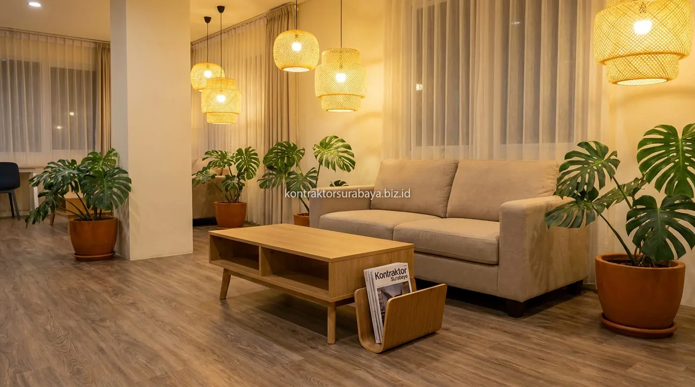

Banyak ruko tua di kawasan komersial Surabaya seperti Ngagel, Manyar, Rungkut, hingga HR Muhammad yang dulunya berfungsi sebagai kantor konvensional atau gudang kini mulai kehilangan daya tariknya. Padahal, dengan lokasi strategis dan akses jalan raya yang mudah dijangkau, ruko kosong tersebut menyimpan potensi bisnis bernilai tinggi jika dialihfungsikan menjadi co-working space minimalis bernuansa santai dan cozy.
1. Potensi Ruko Kosong Menjadi Co-Working Space
Ruko dengan lokasi strategis dan akses jalan yang mudah dijangkau memiliki nilai tambah besar ketika dialihfungsikan menjadi co-working space dibanding dibiarkan kosong tanpa fungsi produktif.
Banyak ruko tua yang sebelumnya digunakan untuk usaha konvensional kini memiliki peluang baru sebagai ruang kerja bersama, mengingat kebutuhan akan ruang kerja fleksibel terus meningkat di kalangan pekerja lepas (freelancer), praktisi kreatif, start-up, maupun tim kecil di Surabaya yang tidak memerlukan kantor permanen berukuran besar.
2. Elemen Desain yang Membuat Co-Working Space Terasa Cozy
Pencahayaan hangat, elemen kayu pada furnitur, area lounge dengan sofa empuk, dan tanaman indoor adalah empat elemen desain yang paling sering diterapkan untuk menciptakan suasana cozy pada co-working space:
- Pencahayaan Hangat (Warm Lighting): Menggantikan lampu neon putih formal khas kantor kaku masa lalu agar suasana terasa lebih santai, ramah di mata, dan memicu kreativitas.
- Elemen Kayu Alami: Penambahan elemen kayu pada meja kerja komunal dan rak partisi menambah kehangatan visual pada ruangan yang didominasi warna netral.
- Area Lounge dengan Sofa Empuk: Memberikan ruang istirahat singkat, membaca santai, atau casual brainstorming di sela-sela jam kerja intensif.
- Tanaman Indoor Tropis: Diletakkan pada beberapa sudut ruangan untuk menambah kesegaran visual, mereduksi stres, sekaligus meningkatkan sirkulasi udara bersih.

3. Pembagian Zona Fungsi dalam Ruko untuk Co-Working
Area kerja bersama, ruang meeting privat, pantry atau lounge, dan area resepsionis adalah empat zona fungsi utama yang perlu direncanakan matang dalam renovasi ruko:
- Area Kerja Bersama (Hot Desk Area): Ditempatkan pada ruang terbuka lantai 1 atau lantai 2 dengan meja panjang modular yang fleksibel untuk kebutuhan perorangan maupun tim kecil.
- Ruang Meeting Privat (Private Meeting Room): Dilengkapi sekat kaca kedap suara (acoustic glass) dan fasilitas presentasi agar pengguna dapat berdiskusi intensif tanpa mengganggu area kerja terbuka.
- Pantry atau Cafe Lounge: Menjadi tempat rehat minum kopi, makan siang, sekaligus area interaksi sosial informal antar pengguna co-working space.
- Area Resepsionis & Lobi Depan: Berada tepat di pintu masuk untuk mengelola sistem akses pengunjung, registrasi harian, serta absensi member.
4. Bagaimana Struktur Ruko Lama Diperkuat untuk Fungsi Baru?
Evaluasi kondisi kolom, balok beton, dan pelat lantai eksisting menentukan apakah struktur ruko lama masih cukup kuat menopang beban tambahan seperti partisi dinding kaca, plafon akustik baru, atau penambahan sistem tata udara (AC Central).
Struktur ruko yang awalnya dibangun untuk fungsi usaha konvensional terkadang memerlukan penguatan tambahan (structural retrofitting), terutama jika konsep co-working space menambahkan lantai mezanin baja ringan atau partisi permanen baru yang menambah beban mati pada struktur bangunan yang sudah berumur.
5. Material Renovasi yang Cocok untuk Nuansa Minimalis Cozy
Lantai vinyl motif kayu, partisi kaca berbingkai aluminium hitam, plafon ekspos dengan pencahayaan tersembunyi (indirect lighting), dan cat dinding warna netral adalah empat material kunci yang mendukung nuansa minimalis cozy:
- Lantai Vinyl Motif Kayu: Memberi kesan hangat dan mewah dengan biaya pemasangan serta perawatan yang jauh lebih hemat dibanding kayu solid.
- Partisi Kaca Aluminium: Memisahkan zona meeting dan kantor privat tanpa membuat ruko terasa sempit atau terisolasi.
- Plafon Ekspos Industrial: Menampilkan instalasi pipa dan ducting yang dicat rapi, menghemat biaya plafon gipsum sekaligus memberi kesan ruangan lebih tinggi dan lapang.
- Cat Warna Netral (Warm Beige & Off-White): Menjadi latar belakang yang tenang dan fleksibel untuk berbagai dekorasi dinding serta pencahayaan aksen.
6. Kesalahan Umum saat Merenovasi Ruko Tua Menjadi Ruang Kerja Modern
Tidak mengevaluasi kondisi struktur sebelum renovasi, mengabaikan sirkulasi udara, kurangnya titik colokan listrik, dan pembagian zona yang tidak jelas adalah empat kesalahan umum dalam renovasi ruko:
- Tidak Mengevaluasi Kekuatan Struktur Eksisting: Berisiko menimbulkan retak rambut hingga lendutan lantai di kemudian hari saat perabotan berat dan orang banyak mulai menempati ruangan.
- Mengabaikan Sirkulasi Udara Segar: Ruko umumnya memiliki minim jendela samping. Mengabaikan instalasi exhaust fan dan fresh-air intake membuat ruangan terasa pengap meski AC menyala dingin.
- Kurangnya Titik Colokan Listrik: Menyulitkan pengguna yang membawa laptop, tablet, dan smartphone secara bersamaan.
- Pembagian Zona yang Tidak Jelas: Menempatkan area istirahat/pantry terlalu dekat dengan area fokus kerja sehingga suara obrolan mengganggu konsentrasi member.
"Transformasi ruko tua menjadi ruang kerja komersial bernilai tinggi memerlukan perpaduan antara evaluasi kekuatan struktur lama dan sentuhan interior minimalis yang memikat calon member."
Setiap bangunan ruko memiliki kondisi struktur, usia, dan dimensi luasan yang berbeda. Oleh karena itu, rencana renovasi perlu disesuaikan melalui survei lapangan langsung sebelum menentukan konsep desain dan anggaran akhir. Anda dapat melihat referensi portofolio transformasi bangunan lainnya pada galeri proyek kami, atau pelajari cakupan layanan lengkap pada halaman jasa renovasi bangunan Surabaya.